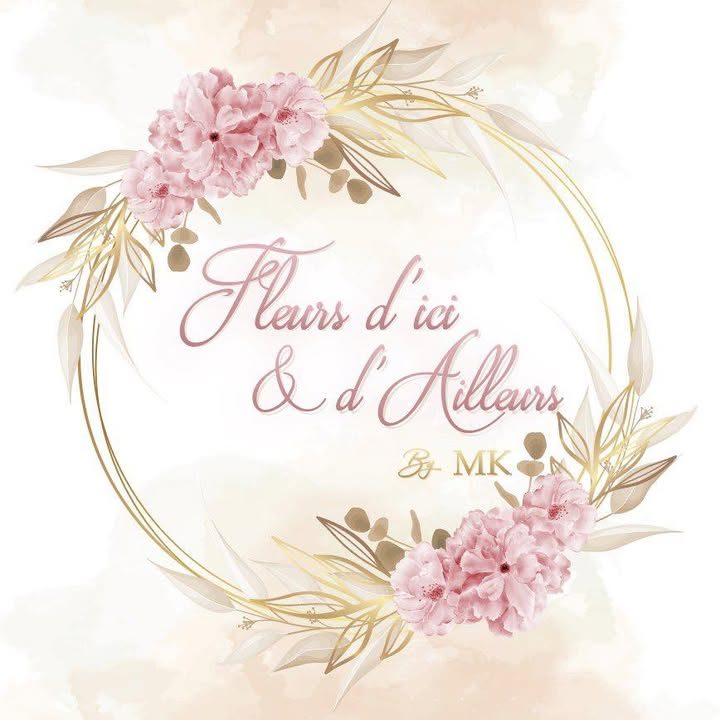
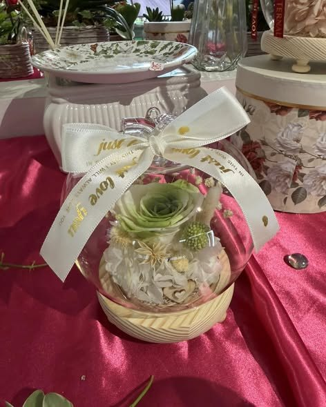
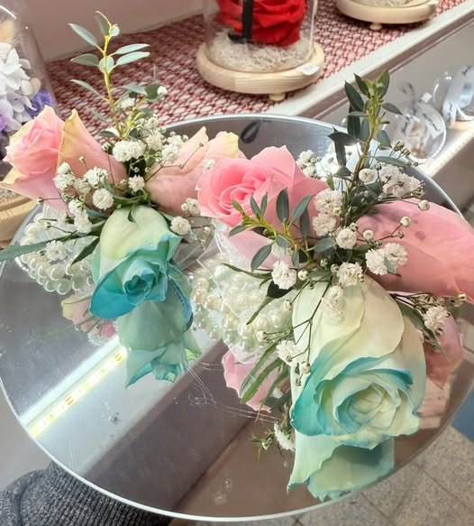
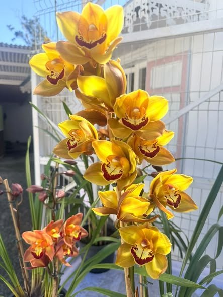
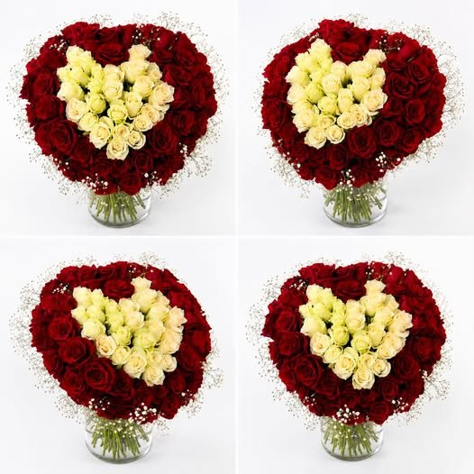
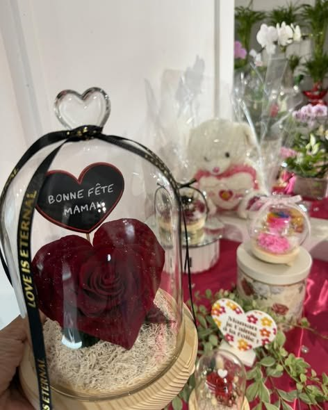

Fleuriste · Le TamponDes bouquets uniques pour toutes les occasions, composés avec soin rue Marius et Ary Leblond.

Du bouquet de la mariée aux bracelets fleuris, des roses éternelles confectionnées sur place aux cymbidiums fraîchement arrivés : chez Fleurs d'ici et d'ailleurs, chaque composition est pensée pour faire plaisir et laisser un souvenir qui dure.




Passez découvrir les créations en magasin ou confiez-nous vos envies : nous créons des bouquets uniques pour toutes les occasions.
Itinéraire